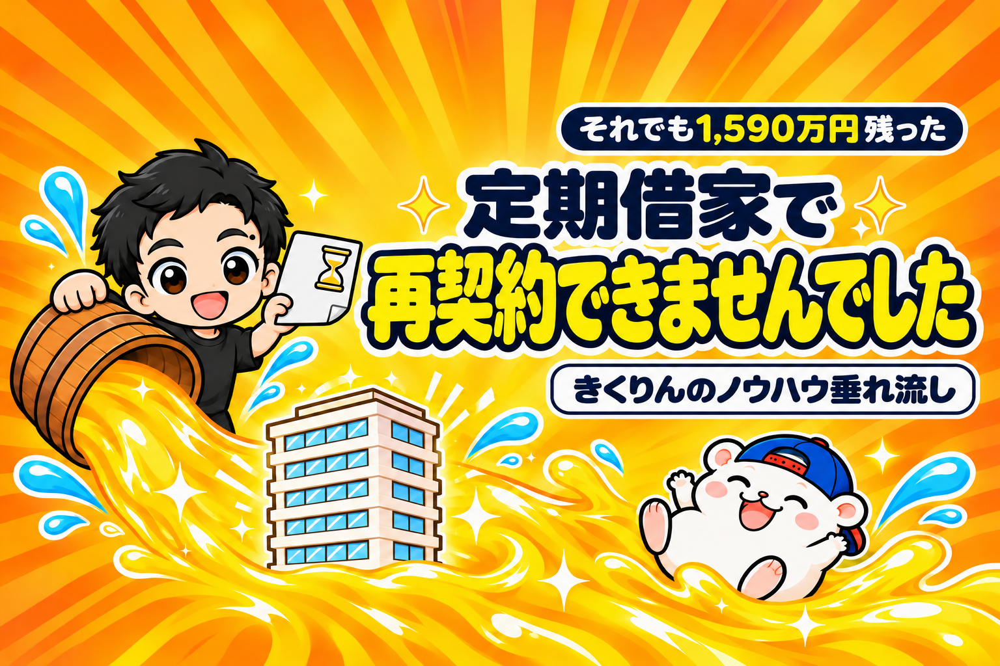

定期借家で再契約できませんでした。
5階建てのビルを一棟まるごと借りて、5部屋のダンススタジオにしていました。
契約は3年の定期借家で、期限が来たところで終わりました。
ビルが取り壊しになるため、再契約はできなかったのです。
5部屋とも閉店して、ビルから退去しました。
ただ、これは最初から分かっていたことです。
「取り壊しになるので、再契約はできません」と聞いたうえで、借りていました。
3年間の結果は、こうです。
初期費用は約354万円で、11か月で回収。
3年間の利益は約1,944万円で、初期費用を引いても約1,590万円が残りました。
物件情報に「定期借家」と書いてあると、外したくなるかもしれません。
結論、避ける前に1つだけ計算してください。
期間の中で、初期費用を回収して、そのあと利益まで出せるかです。
出せるなら、家賃が安いぶん、狙い目になります。
先に、この記事の答えを5つ書いておきます。
- 普通借家は「更新」、定期借家は「再契約」
- 定期借家は、再契約で大きく値上げされることがある
- 期間の終わりに、再契約できないこともある
- それでも家賃が安ければ、期間内の回収と利益で判断する
- 原状回復と、家具・備品の行く末は、契約の前に決める
この記事を書いた人

この記事は、定期借家で「再契約」も「再契約なし」も経験してきたきくりんが書いています。
2年ごとに再契約している貸し会議室と、3年で終わったダンススタジオのビルです。
撤退した6店舗のうち5店舗が、このビルでした。
普通借家と定期借家のちがいは「更新」か「再契約」か
| 普通借家 | 定期借家 | |
|---|---|---|
| 期間が終わると | 更新して続く | 契約は終わる。続けるなら再契約 |
| 貸主から断れるか | 正当な理由がないと断れない | 期間で終わる(再契約は双方が合意したときだけ) |
| 家賃の値上げ | ありえる。ただ、ふつうの範囲 | 再契約で決め直すので、大きく上がることもある |
| 家賃の目安 | ふつう | 安く出ることがある |
| 原状回復 | 契約しだい | 契約しだい。取り壊しなら不要のことも |
普通借家は、期間が終わっても「更新」で続きます。
貸主は、正当な理由がないと更新を断れません(国土交通省)。
家賃の値上げもありえますが、ふつうの範囲でおさまることが多いです。
定期借家は、期間が終わると、契約そのものが終わります。
続けたいときは、貸主と話して「再契約」をします。
再契約は、新しい契約です。
だから、家賃も一から決め直しになります。
定期借家の契約は、書面で結びます。
契約の前に、契約書とは別の書面で「更新がないこと」の説明を受けるのが決まりです。
その説明の書面に、期間の終わりの日が書いてあるかを見てください。
定期借家のこわさは、値上げと「期間の終わり」
定期借家のこわさは、2つあります。
1つめは、再契約のときの値上げです。
新しい契約なので、大きく上がることもあります。
例えば、ぼくの貸し会議室の1つは、2年ごとの定期借家です。
10㎡ほどの部屋が3つで、借りはじめの家賃は1部屋5万円でした。
電気・水道・Wi-Fiは家賃にふくまれていて、ほかに払うものはありません。
自分で払う分を引いて考えると、とても安い家賃です。
それでも、2回目の再契約のときに、1部屋5万円から5.5万円に上がりました。
2つめは、期間の終わりに、再契約できないことです。
取り壊しや建て替えが決まっている物件は、最初から「再契約できません」と書いてあることもあります。
冒頭のビルも、これでした。
ぼく自身は、定期借家でいやな思いをしたことは、まだありません。
でも、同じようにレンタルスペースをやっている仲間からは、話をよく聞きます。
多いのは、再契約でかなり値上げされた、という話です。
しかも最近は、不動産のオーナー向けに、定期借家をすすめる話をよく見かけます。
これから、定期借家の物件はふえていくかもしれません。
避けてばかりいると、選べる物件がへっていきます。
だから、定期借家は「続けられたら、もうけもの」と考えます。
期間の中だけで、計算を合わせておきます。
家賃がとても安いなら、定期借家は狙い目になる
定期借家の物件は、期間の決まりがあるぶん、家賃が安く出ることがあります。
期間の中で、回収して利益まで出せる計算なら、普通借家より有利になります。
計算は、3つだけです。
- 契約の期間を、月の数にする(3年なら36か月)
- 初期費用 ÷ 月の利益で、回収の月を出す
- 残りの月 × 月の利益で、期間の中の利益を出す
回収の月が、期間の半分をこえるなら、見送ります。
期間の終わりに、再契約できないこともあるからです。
例えば、冒頭のビルを、この3つで計算するとこうなります。
| 項目 | 取り壊しが決まったビルのダンススタジオ(一棟・5部屋) |
|---|---|
| 契約 | 3年の定期借家(再契約なし・ビルの取り壊し) |
| 家賃 | ビル一棟で35.2万円(税込み・1部屋あたり約7万円) |
| 初期費用 | 約354万円(5部屋) |
| 回収 | 11か月 |
| 3年間の利益 | 約1,944万円 |
| 初期費用を引いた手残り | 約1,590万円 |
36か月の期間で、回収は11か月。
期間の3分の1で回収できる計算だったので、出すと決めました。
さらに、取り壊しのときに、管理会社さんの交渉で補償金も出ました。
金額は、5部屋の利益の1年分以上です。
ただ、これは期間の計算には入れていません。
定期借家なら必ず出る、というものではないからです。
くわしい話は、こちらに書いています。

原状回復と、家具・備品の行く末を先に決める
定期借家は、終わりの日が決まっています。
だから、出ていくときの手間とお金も、先に決めておけます。
見るのは、2つです。
1つめは、原状回復です。
ふつうは、借りたときの形に戻して返します。
内装の工事をしたレンタルスペースでは、ここに思ったよりお金がかかります。
取り壊しが決まっている物件なら、原状回復がいらないことがあります。
例えば、そのビルは「ビルごと取り壊すので、原状回復は不要。備品を片付けて明け渡すだけ」という契約でした。
2つめは、家具・備品の行く末です。
鏡・音響・机・いすを、期間が終わったらどうするか。
次の店で使うのか、売るのか、捨てるのか。
捨てるなら、そのお金も初期費用の計算に入れておきます。
例えば、そのビルのときは、使えるものは新しい店へ持っていきました。
使わないものは、業者さんに回収に来てもらって、処分しました。
次の店の準備と、期間の終わりを重ねておくと、備品をむだにしません。
定期借家の物件を見たら、確かめる5つ
定期借家の物件を見つけたら、申し込む前に、この5つを確かめてください。
| # | 確かめること | 見るところ |
|---|---|---|
| 1 | 契約の期間は何年か | 説明の書面・契約書 |
| 2 | 再契約できるか(できる・できない・相談) | 不動産屋さんに聞く |
| 3 | 家賃は、まわりの物件よりどれだけ安いか | 同じ駅の普通借家の物件 |
| 4 | 回収の月が、期間の半分より短いか | 初期費用 ÷ 月の利益 |
| 5 | 原状回復はいるか・家具と備品をどうするか | 契約書の原状回復の項目 |
1つでも答えが出ないなら、契約の前に不動産屋さんに聞きます。
特に2の「再契約できるか」は、貸主の考えで変わります。
「たぶん大丈夫」ではなく、書面に書いてあることで判断してください。
まとめ
定期借家は、こわい契約ではありません。
期間の中で計算が合うかどうかで、判断する契約です。
- 普通借家は「更新」、定期借家は「再契約」
- 定期借家は、再契約で大きく値上げされることがある
- 期間の終わりに、再契約できないこともある
- それでも家賃が安ければ、期間内の回収と利益で判断する
- 原状回復と、家具・備品の行く末は、契約の前に決める
今日やることは、3つです。
- 気になる物件の契約が、普通借家か定期借家かを見る
- 定期借家なら、期間を月の数にして、回収の月を計算する
- 再契約と原状回復について、不動産屋さんに1つ質問する
あなたが見送った定期借家の物件、計算すると狙い目だったかもしれません。
物件探しから、月いくら残るかの計算、出店、撤退まで。23店舗の数字といっしょに、教科書にぜんぶ書いています。
レンタルスペース経営の教科書

販売価格は3部売れるごとに2,000円ずつ値上がりします（上限あり）。内容・最新価格は販売ページをご確認ください。
▼もう1つの副業、AI社員だけのeBay輸出店の実録🐹

▼ブログ(レンスペ×eBay、全記事まとめ)